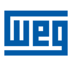
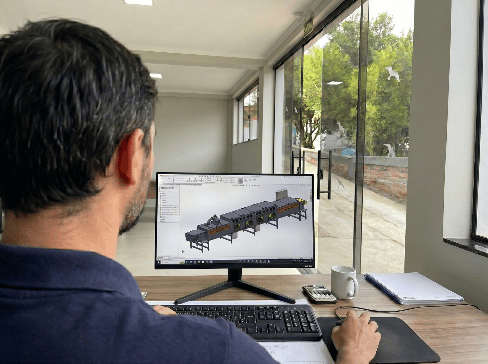
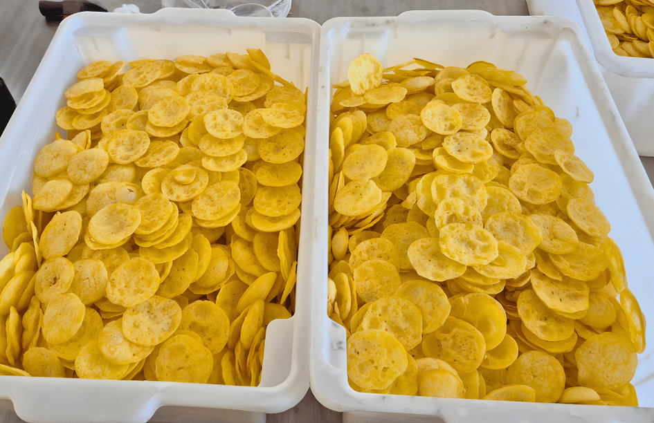
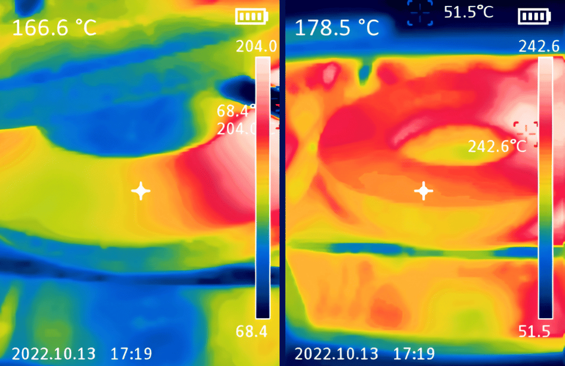
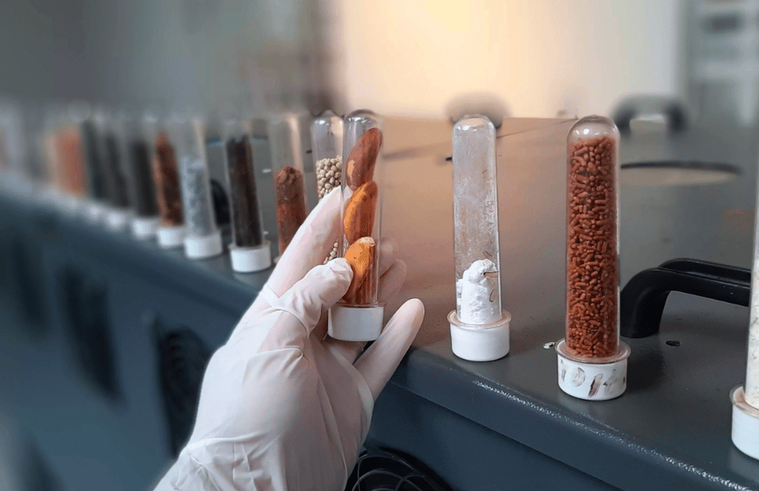
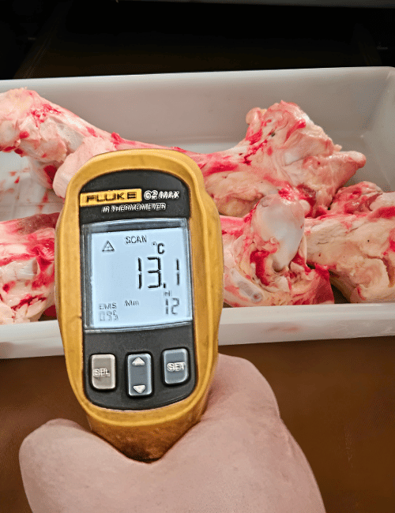
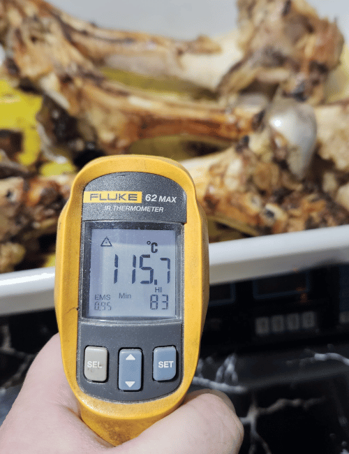

Redução de até 70% no tempo de secagem:
Acelere a secagem e transforme seu processo em uma linha contínua, com mais capacidade, produtividade e escala.

Acelere a secagem e transforme seu processo em uma linha contínua, com mais capacidade, produtividade e escala.
Mais produtividade e automação na linha, com menos gargalos e mais desempenho por hora.
Tenha maior controle da umidade final, mais uniformidade no processo e mais consistência no resultado.
Reduza desperdícios, otimize o consumo de energia e avance para uma operação mais eficiente e alinhada às metas de descarbonização.
Os resultados podem variar conforme produto, processo, umidade inicial, umidade final e parâmetros de operação.
Projetos industriais desenvolvidos para operações que precisam ganhar eficiência, controle e previsibilidade na etapa de secagem.

Tecnologia aplicada em diferentes segmentos, produtos e desafios de secagem industrial.
PROJETOS ENTREGUES
Conheça sistemas desenvolvidos pela JODI que saíram da engenharia e foram transformados em equipamentos industriais reais para processos de secagem, desidratação e controle térmico.

Micro-ondas + convecção
Sistema projetado para unir estabilidade de processo, uniformidade e repetibilidade em aplicações industriais de secagem.

Solução para linhas industriais que precisam reduzir tempo de processo mantendo controle e qualidade final.

Equipamento desenvolvido sob medida conforme produto, capacidade, layout e necessidade operacional.
Gargalo de processo
Em muitos processos industriais, a secagem é a etapa que mais consome tempo, energia e controle operacional. Quando essa etapa não acompanha o ritmo da produção, surgem gargalos, custos maiores e perda de margem de lucro.
Ciclos longos reduzem a capacidade produtiva e aumentam o tempo de entrega.
Consumo elevado de energia e baixa eficiência aumentam o custo por kg produzido.
A falta de controle gera lotes inconsistentes e dificulta a padronização.
Produtos fora do padrão exigem reprocesso, descarte e dificultam a escala da produção com qualidade.
Tecnologia JODI
Desenvolvida para tornar processos críticos de secagem mais rápidos, uniformes e controlados.
A tecnologia da JODI utiliza micro-ondas industriais para atuar diretamente na umidade interna do produto, acelerando o processo de secagem de dentro para fora. Conforme a aplicação, pode ser combinada ao ar quente controlado para aumentar a eficiência, a padronização e o controle sobre o resultado final.

JODI ENG
A JODI Tecnologias desenvolve, fabrica e integra sistemas industriais de secagem por micro-ondas e soluções híbridas com ar quente para empresas que buscam mais eficiência, controle e produtividade em seus processos.
Com sede em Panambi/RS e filial em Campinas/SP, a JODI atua desde a análise técnica do produto até a engenharia, automação, fabricação, instalação e validação da solução.

Aplicações industriais
A JODI desenvolve projetos para aplicações em alimentos, pet food, minerais, biomassa e materiais especiais.
Secagem de snacks, ossos, carnes, ingredientes e produtos de alto valor agregado.

Soluções para produtos que exigem controle de umidade, textura, cor, aroma e qualidade final.

Projetos sob medida para produtos técnicos, sensíveis ou de alta complexidade industrial.

A tecnologia JODI pode ser aplicada a inúmeros produtos, desde matérias-primas industriais até materiais sensíveis e de alto valor.
JODI LAB
Antes de propor uma solução, a JODI realiza testes em laboratório com produtos reais para entender o comportamento do material, validar parâmetros de secagem e gerar dados técnicos para a engenharia.
Comparativo da amostra
Análise visual e técnica do produto para entender comportamento, integridade e qualidade final após o teste controlado.


Passo a passo do teste
Veja como a JODI valida sua aplicação antes de avançar para o projeto.
Entendemos o produto, o processo atual e os objetivos industriais para definir o melhor caminho de avaliação.
Recebemos e preparamos o material para os ensaios em laboratório, considerando suas características e condições reais de processo.
Testamos a amostra com micro-ondas, ar quente ou sistema híbrido, monitorando parâmetros como tempo, temperatura, umidade e comportamento do produto.
Com os dados do laboratório, a equipe de engenharia avalia a viabilidade técnica, o potencial de escala e a configuração mais adequada para a solução industrial.
Envie sua amostra e descubra o potencial da tecnologia JODI para o seu processo.
Diagnóstico técnico
Em 3 passos, avaliamos se a tecnologia de micro-ondas faz sentido para o seu produto, capacidade e objetivo de processo.
Entendemos seu produto, processo atual, capacidade desejada e principais desafios da operação.
Avaliamos a viabilidade da tecnologia e indicamos uma direção inicial de capacidade, configuração e necessidade de testes.
Quando fizer sentido para os dois lados, apresentamos uma proposta técnico-comercial com escopo, desempenho esperado e cronograma.